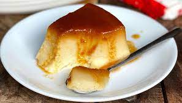

Budín de pan

Budín de pan is a common desert in Argentina. It means 'bread pudding' and is a great -tasty- way of reusing bread leftovers
All you need to make this delicious dessert is:
- Sugar
- Bread leftovers
- Milk
- Eggs
- Vanilla extract
- Lemon zest
- First, make a caramel pouring sugar into a savarin
- Chop the bread and mix it with warm milk. You can leave it in chunks or use a mixer to make the mix smoother
- Add sugar, vanilla extract and lemon zest to the milk and bread mix
- Mix the eggs and pour them into the milk mix
- Put the mix in the savarin and take it to a low-middle oven in a water bath for aproximately 50 minutes
- Serve when it's cold with some whipped cream and dulce de leche